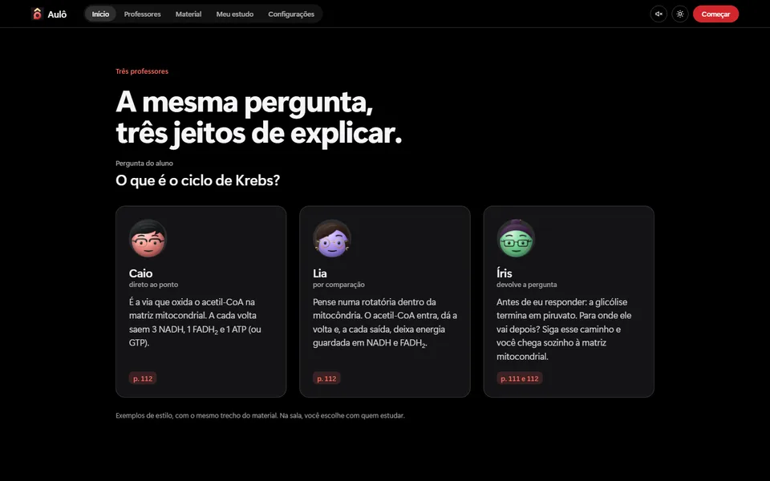
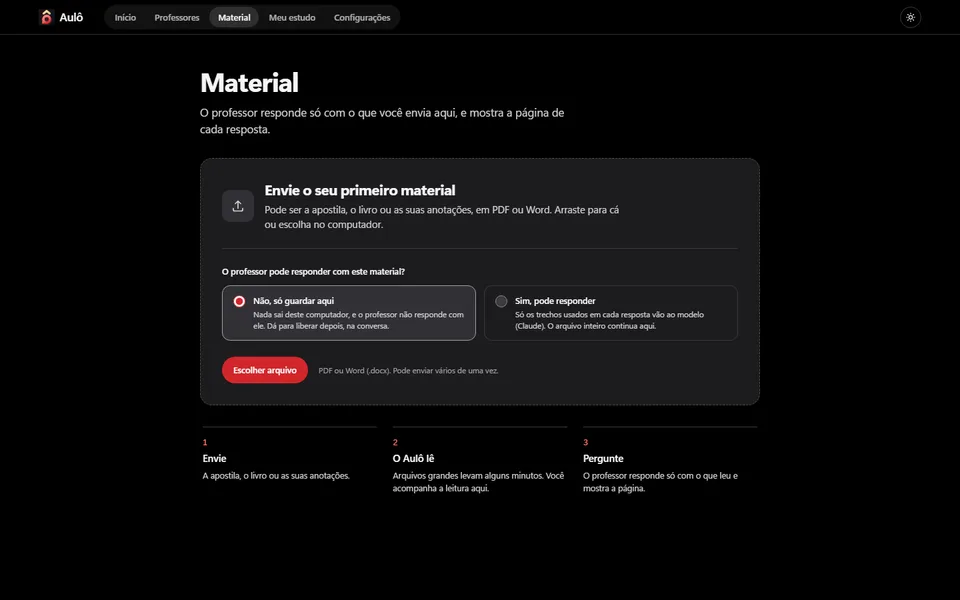
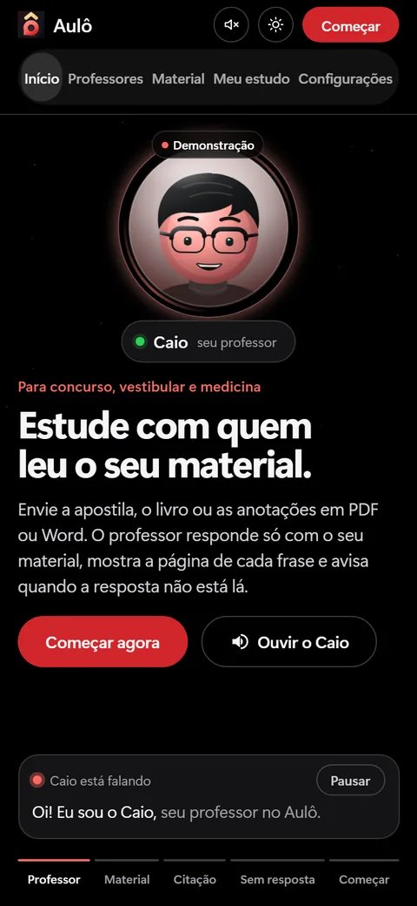

- In progress
- Private repository
Aulô
Study with someone who has read your material.
A voice study platform for Brazilian civil-service exams, university entrance and medicine. You upload your textbook, book or notes as a PDF or Word file. The virtual teacher answers only from that material, shows the page behind each sentence and says so when the answer is not there. The product interface is in Portuguese.

A teacher who only knows what you uploaded
People preparing for civil-service exams, university entrance or medicine study from their own textbooks, books and notes. The idea behind Aulô is to talk out loud with a virtual teacher who has read exactly that material and does not leave it.
Who it is for
For people who study from their own material, as PDF or Word files, and want to ask questions out loud without getting an answer that has no source. The product's stated focus is civil-service exams, university entrance and medicine.
What the teacher does
- Answers only from your material, not from what it “knows” in general.
- Shows the page behind each sentence of the answer.
- Says when the answer is not there, instead of making it up.
How it works
This is the product's design. What is already proven and what is not are in the Status section.
- 01Upload the material
- A PDF or Word file: the textbook, the book or the notes. On the Material screen you choose whether the teacher may answer with the file or whether it is only stored.
- 02Aulô reads it
- Large files take a few minutes, and the reading can be followed on the screen itself.
- 03Ask out loud
- The conversation works like a phone call: you speak, the teacher answers, and you interrupt by tapping the sphere.
- 04See the page
- Each answer carries the page of the material it came from. If it is not in the material, the teacher says it is not.
your material→relevant passages→answer with the cited page·or: “not in the material”
On what leaves the computer, the Material screen says: with “Não, só guardar aqui” (no, just store it here), nothing leaves the computer and the teacher does not answer with the file; with “Sim, pode responder” (yes, it may answer), only the passages used in each answer go to the model, and the whole file stays on the computer. That is the behavior the screen describes; the project's security review has no published result yet (see Status).
Three teachers, three ways of explaining
The question and the passage of the material are the same; the style of the answer changes. The examples below come from the landing page, with a demo passage about the Krebs cycle.
Caio
straight to the point
Answers in a few lines and closes with the page number.
Lia
by comparison
Explains by analogy: in the example, the cycle becomes a roundabout inside the mitochondrion.
Íris
asks the question back
Before answering, asks something that leads the person to the path: in the example, where pyruvate goes after glycolysis.

On the landing page, the demo uses the browser's voice; in the classroom, each teacher has a voice of their own.
Screens
The frontend has five pages: start, teachers, material, my study and settings, in dark and light themes, on desktop and phone.


All captures come from the frontend in development, with demo content. None shows the material, conversation or data of a real person.
Project status
Aulô is in progress and the repository is private. Below, what I can prove today and what I cannot yet, as of 11 Nov 2026.
Already proven
- A five-page frontend captured at 1440 and 375 px, in light and dark themes.
- 26 automated contrast checks (AA, text at 4.5:1 or more) of the color tokens in both themes. I ran the test file and all 26 pass.
- The three teachers exist in the frontend, each with their own style, with demo content.
Sources: the captures and tests/test_lousa_contraste.py (gate G7), on the feat/aulo-polimento-landing branch.
Not yet proven
- Recall of the search in the material: the target has not been reached yet, and I do not publish a number.
- Time to the first word: it has a target and a planned measurement, with no published result.
- Green CI: on the branch's last commit, lint, secrets-scan and pytest were failing and the launcher passed. The causes are catalogued in the finalization plan.
- Security review: it is in the plan (gate G6), with no published result.
- Integration: the branch is 306 commits ahead of main and has not been merged.
- Working without the cloud: speech-to-text uses Groq and the teachers' voice uses Fish Audio.
- Learning faster: I do not claim that, and I have no usage results with students.
The finalization plan has gates G0 to G9, from green CI to the merge into main, including first token, recall, security review and visual validation.
I can show the code, the tests and a demo in a conversation.